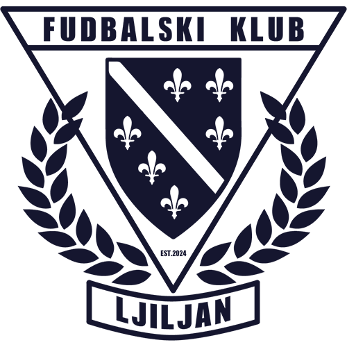

F.K. Ljiljan
Stats

Vælg en spiller for at se alle oplyste sæsoner og de samlede klubtal.
| Nr. | Spiller | Position |
|---|---|---|
| 80 | Målmand | |
| 1 | Målmand | |
| 14 | Højreback | |
| 20 | Højreback | |
| 16 | Centerback | |
| 4 | Centerback | |
| 19 | Venstreback | |
| 2 | Venstreback | |
| 37 | Venstreback | |
| 6 | Forsvar | |
| 12 | Forsvar | |
| 40 | Forsvar | |
| 3 | Forsvar | |
| 29 | Forsvar | |
| 15 | Forsvar | |
| 26 | Forsvar | |
| 35 | Forsvar | |
| 31 | Forsvar | |
| 8 | Defensiv midtbane | |
| 30 | Midtbane | |
| 13 | Midtbane | |
| 38 | Midtbane | |
| 18 | Midtbane | |
| 23 | Midtbane | |
| 33 | Midtbane | |
| 5 | Midtbane | |
| 28 | Midtbane | |
| 99 | Midtbane | |
| 36 | Midtbane | |
| 7 | Højrekant | |
| 11 | Højrekant | |
| 9 | Venstrekant | |
| 17 | Angriber | |
| 47 | Angriber | |
| 32 | Angriber | |
| 25 | Angriber | |
| 22 | Angreb | |
| 27 | Angreb | |
| 34 | Angreb | |
| 21 | Angreb | |
| 39 | Angreb | |
| 10 | Angreb |